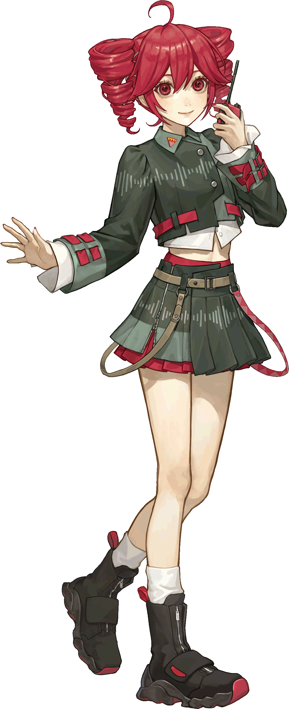
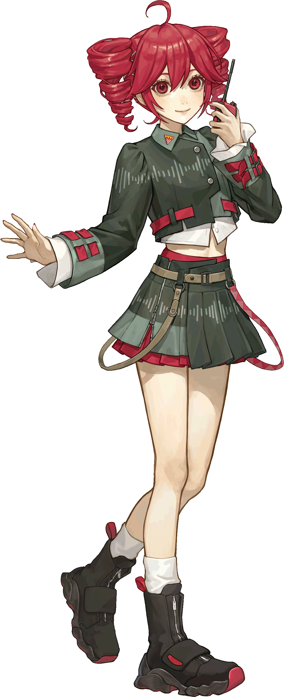

(1).png)
Kasane Teto (重音テト) es una famosa cantante virtual japonesa, originalmente desarrollada para UTAU, un software de síntesis vocal.
Kasane Teto fue creada el 1 de abril de 2008 como parte de una broma del Día de los Inocentes por fans japoneses del foro 2channel. En ese momento, la popularidad de VOCALOID (especialmente Hatsune Miku) estaba explotando, así que los usuarios crearon un personaje llamado Kasane Teto, diciendo que era una nueva VOCALOID oficial. Su diseño era convincente y venía con una "ficha técnica falsa", lo que hizo que muchos cayeran en la broma. Sin embargo, en lugar de desaparecer tras el chiste, Teto se hizo tan popular que su desarrollo continuó seriamente, usando un motor gratuito de síntesis vocal llamado UTAU, desarrollado por Ameya/Ayame.
UTAU es un software similar a VOCALOID, pero gratuito y de código abierto, donde los usuarios pueden crear sus propias voces (llamadas "voicebanks") grabando sonidos y asignándolos a notas musicales. Teto fue uno de los primeros personajes en popularizar UTAU. Su voz original fue proporcionada por Oyamano Mayo, una actriz de voz amateur que grabó los sonidos para que pudieran ser usados en UTAU.

 

"Daidaidaidaidaikirai" (15/03/2025)--"Mesmerizer" (27/04/2024)